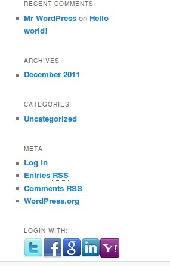

Thank you for purchasing my theme. If you have any questions that are beyond the scope of this help file, please feel free to email via my user page contact form here. Thanks so much!
Social Auth is an easy configurable, fully dynamic, higly customizable wordpress plugin/widget that lets you authorize your sign-in over well-known networks like facebook, yahoo, google, etc... Script usage is very easy, you don't need to write any code. You can fully integrate this script by just only configuration.
After you have installed and activated the plugin, you will see a section called "SocialAuth" in "Settings". Go and configure your plugin!
The ones you activated on backend will be displayed as login button on frontend.

I've retrieved the social network icons from iconfinder.Owner of the icons has been informed.About the owner
Once again, thank you so much for purchasing this theme. As I said at the beginning, I'd be glad to help you if you have any questions relating to this theme. No guarantees, but I'll do my best to assist. If you have a more general question relating to the themes on ThemeForest, you might consider visiting the forums and asking your question in the "Item Discussion" section.
Hüseyin BABAL